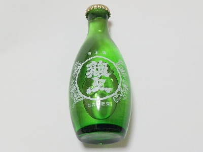

簸上清酒の徳利瓶
更新日 : 2026/10/03

小さい口からお酒を注ぐと感じがいいですね。自然と飲むペースが遅くなるし、味わって飲みます。
お米の雑味がなくてスッキリした味の上に、醸造アルコールで更にスッキリしてました。
こんなお酒が一番飲みやすいって思いながら飲みました。
更新日 : 2026/10/03

小さい口からお酒を注ぐと感じがいいですね。自然と飲むペースが遅くなるし、味わって飲みます。
お米の雑味がなくてスッキリした味の上に、醸造アルコールで更にスッキリしてました。
こんなお酒が一番飲みやすいって思いながら飲みました。